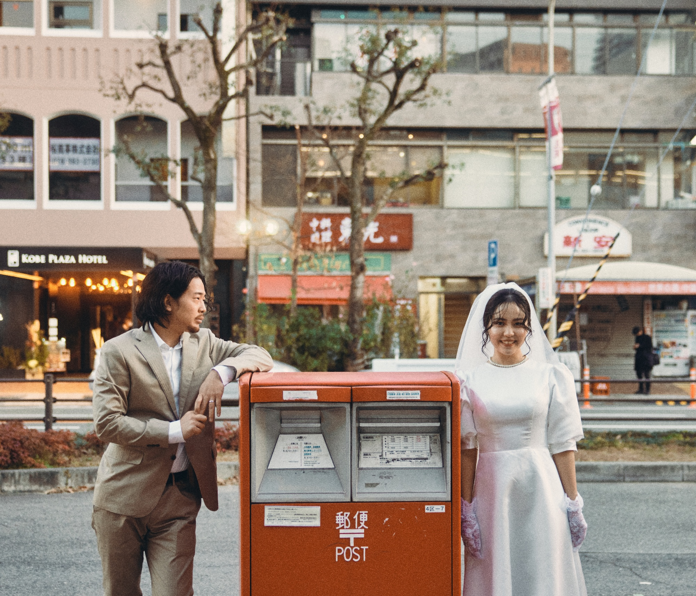
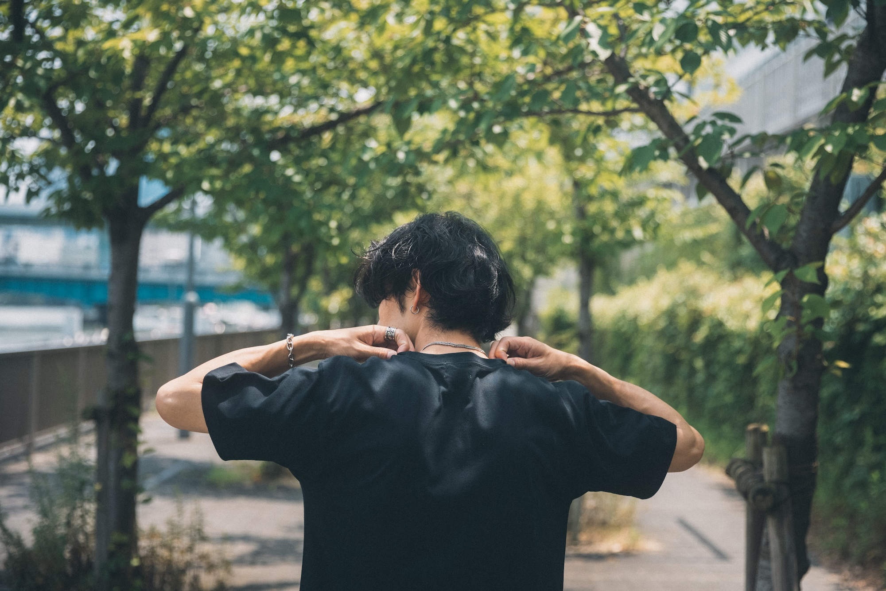
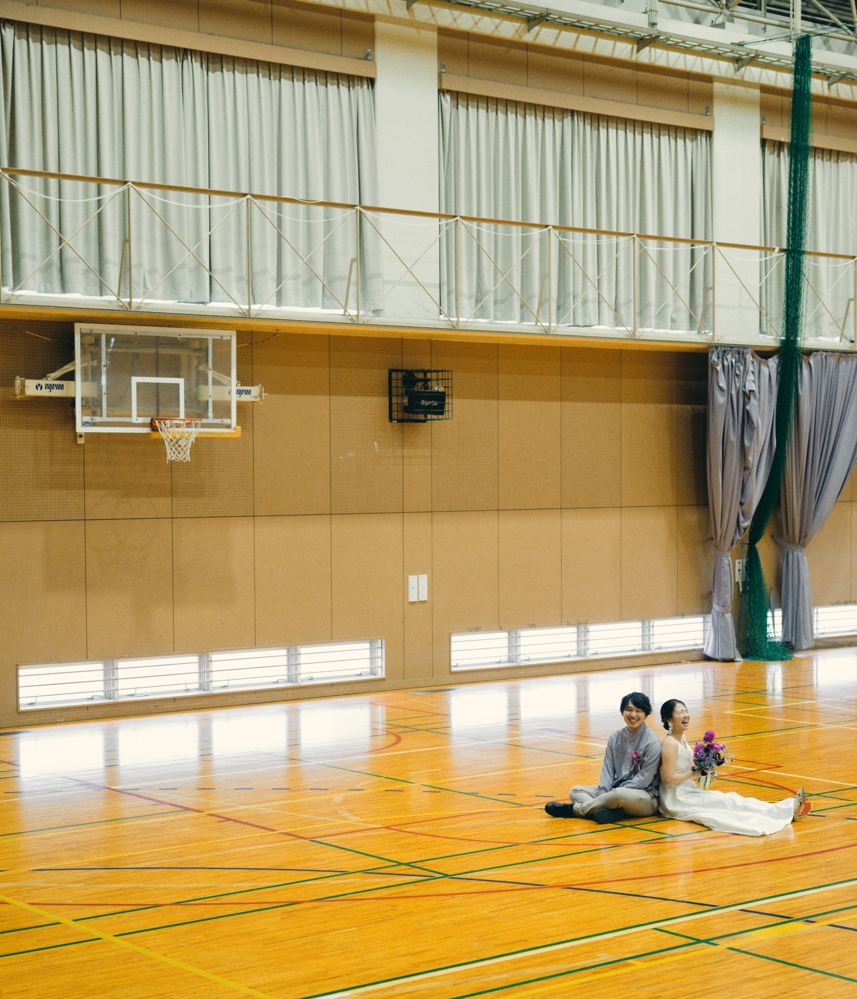
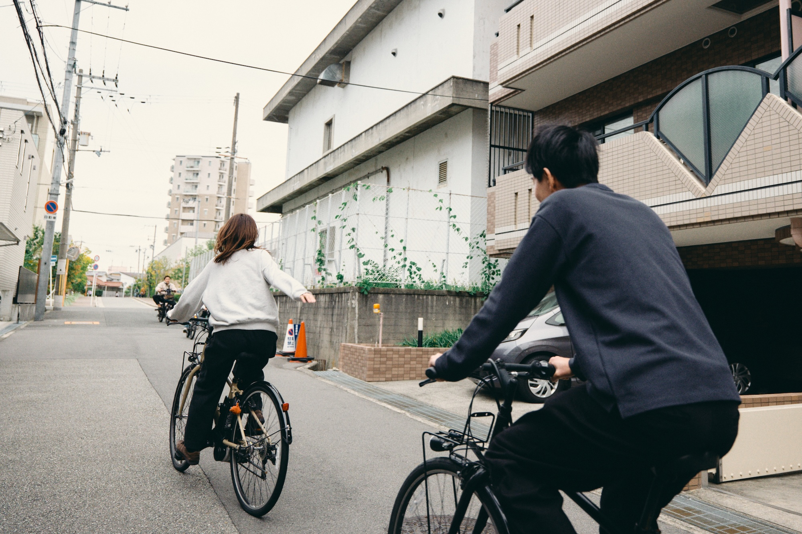
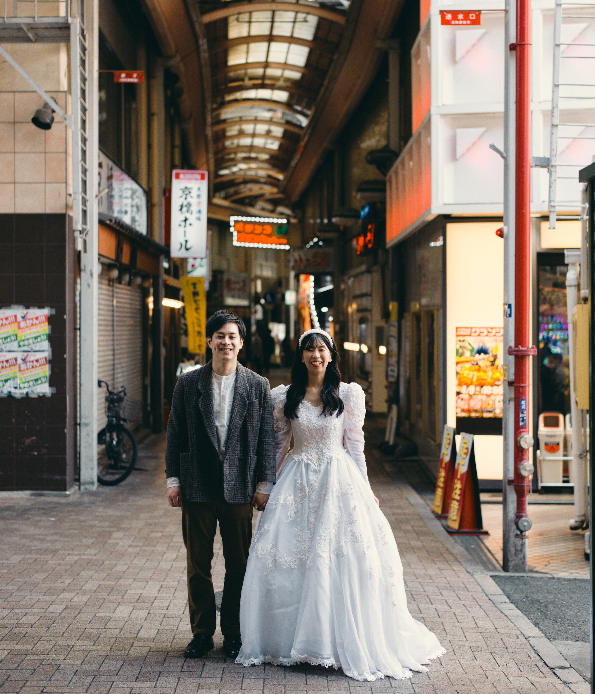
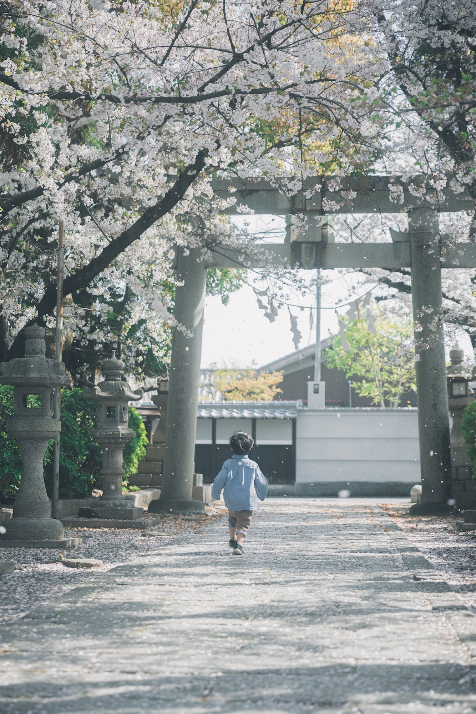

Works
Movie
ASEF
Event Highlight / Interview
Camera / Edit / Color
愛昇殿
CM
Direction / Camera / Edit / Color
Still














Movie
ASEF
Event Highlight / Interview
Camera / Edit / Color
愛昇殿
CM
Direction / Camera / Edit / Color
Still






wedding documentary